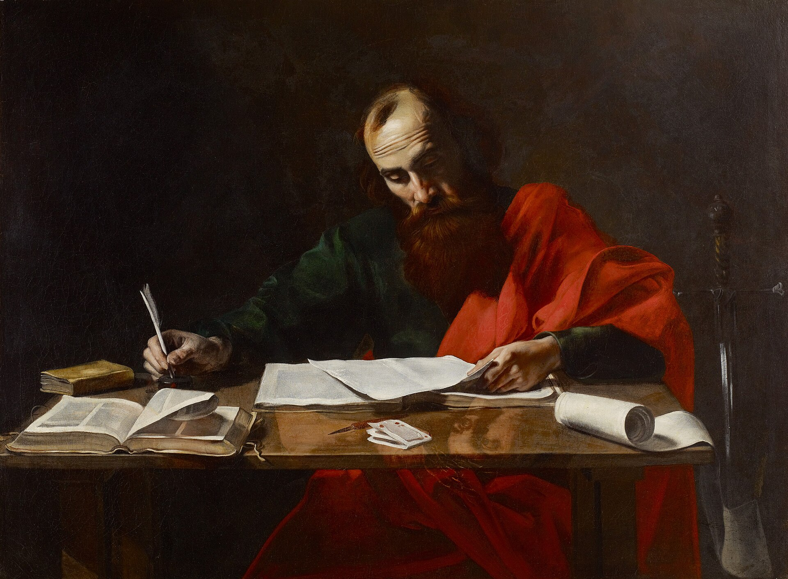

Romans 8 — The Mister Translation

⚠ He is working alone, and he was not. Romans ends by naming the man who actually held the pen: “I Tertius, who write the epistle, salute you in the Lord” (16:22) — a scribe who takes the letter down by dictation and then slips in his own greeting. So the most systematic argument in the New Testament was composed out loud, to another person in the room. Which makes this a quietly wrong picture of a chapter whose whole spine is nine syn- compounds insisting that nothing happens alone.
Worth naming as anachronism rather than error, since the painter was not attempting archaeology: the bound books on the table belong to a later technology than Paul’s (he wrote in the age of the scroll — there is one, correctly, at the right), and the lens lying on the open codex is a seventeenth-century object. The sword at the edge is not a prop but an attribute: tradition has Paul beheaded, and painters give him the instrument the way they give Peter his keys.
{kind=link}
Translator’s Notes
1–4 — ⚠ A clause the KJV has and the earliest manuscripts do not
Verse 1 in the KJV reads “…no condemnation to them which are in Christ Jesus, who walk not after the flesh, but after the Spirit.” That second half is not in the text this translation follows. The apparatus is blunt about it: Westcott-Hort, Tregelles and NA28 end the verse at “Christ Jesus”; the Byzantine text adds the clause.
You can watch the split happen on the shelf, and it runs along text-family lines rather than theological ones. KJV has it and so does RV 1909 («los que no andan conforme á la carne») — both working from the Received Text. ASV (1901) drops it, and so do NWT and TNM. Five versions, two readings, one clean line between them.
Where did it come from? Almost certainly from verse 4, four lines down, which ends with very nearly those words — a scribe’s eye slipping to a similar phrase and carrying it up is one of the most ordinary things that happens in hand-copying. Notice what that does to the argument, though: with the clause, verse 1 makes freedom from condemnation conditional on how you walk. Without it, verse 1 is unconditional and the walking is the result, arriving in verse 4. The shorter reading is the harder claim.
⚠ No vote is taken here. The clause is genuinely ancient in the Byzantine tradition and genuinely absent from the earliest witnesses, and the text above prints the shorter reading with the longer one standing in full view.
5–11 — Flesh, and a word that is not “body”
Sarx, “flesh,” carries this whole stretch, and it is worth saying plainly that it does not mean body. Paul has a perfectly good word for body (sōma) and uses it in verses 10, 11, 13 and 23 — and in verse 11 the body is what gets made alive. So the contrast running through these verses is not spirit-good, matter-bad; it is two orientations, two things a person can be pointed at. Phronēma (vv6–7) is not “carnal mind” in the sense of appetite but a mindset — what you are minded toward.
Verse 3’s homoiōmati sarkos hamartias, “in the likeness of sinful flesh,” is carefully hedged in Greek and every version keeps the hedge: not as sinful flesh, and not merely appearing as flesh, but in its likeness. The care is Paul’s.
12–14 — Debtors, and a sentence Paul leaves unfinished
Verse 12 is broken in the Greek: “we are debtors — not to the flesh, to live according to flesh.” Paul says what we do not owe and never says what we do. Most versions tidy it, and the tidying is reasonable, but the gap is in the text and this translation leaves it open.
Agontai (v14) is passive — those who are led — and the same verb is used of livestock being driven and of prisoners being taken. It is not a word about following advice.
15–17 — ⚠ Aramaic in a Greek letter, and the thread begins
Abba is Aramaic, not Greek, sitting untranslated inside a letter written in Greek to Rome — and then immediately translated: Abba ho patēr, “Abba, the Father.” Paul does the identical doubling at Galatians 4:6, and Mark does it at 14:36 in Gethsemane. The likeliest explanation is that the Aramaic word had become fixed in Greek-speaking congregations as something they actually said — a loan-word from the prayer life of the earliest church, preserved because it was used, not because it was needed. It is one of the few places where the sound of first-century prayer survives.
Huiothesia (v15) is a legal term: adoption, specifically the Roman procedure by which an outsider was given a son’s standing and inheritance rights. Roman readers knew exactly what it cost and exactly how binding it was.
And here the chapter’s spine begins to show. Verse 16 is symmartyrei — the Spirit witnesses together with our spirit — and verse 17 stacks three more: synklēronomoi (heirs together), sympaschomen (suffer with), syndoxasthōmen (glorified together). Four syn- compounds in two verses. Credit where it is due: the shelf handles this passage well. KJV and ASV both give “joint-heirs… suffer with him… glorified together,” and RV keeps all three too («coherederos… juntamente con él… juntamente con él»). It is later in the chapter that the pattern goes missing.
One smaller difference: KJV has “the Spirit itself” and ASV “the Spirit himself.” The Greek pronoun agrees with pneuma, which is grammatically neuter, so “itself” is the literal rendering and “himself” is a theological reading of a grammatical accident. NWT reads “itself”. This translation leaves it as “himself” for the sense while naming the fact here.
18–22 — The creation cranes its neck, and groans with
Apokaradokia (v19) is a wonderful, physical word — built on kara, head, it means watching with the head thrust forward, the posture of someone straining to see something arrive. “Earnest expectation” (KJV, ASV) is accurate and bloodless; this translation says waits with its head craned.
Then verse 22 puts syn- on both verbs: systenazei and synōdinei — groans-together and travails-together. Together with what? Paul does not say, and the ambiguity is productive: the creation groaning along with itself, or along with us, who groan in the next verse. Here the versions begin to slip. KJV and ASV supply one “together” at the end for both verbs (“groaneth and travaileth in pain together”), which reads as though the two verbs happen simultaneously rather than each being a with-word. NWT is the most exact on the shelf — “keeps on groaning together and being in pain together” — and RV manages it in Spanish with «gimen á una, y á una están de parto», doubling the phrase exactly as the Greek doubles the prefix.
Note also that verse 20’s subjection is ouch hekousa, “not willing” — the creation did not consent, and Paul says so without softening it.
23–27 — ⚠ The compound the whole shelf loses
Verse 26 is where the pattern disappears in English. The verb is synantilambanetai — a triple compound: syn (with) + anti (over against, facing) + lambanetai (takes hold). It is a picture of someone getting under the other end of a load: taking hold of it with you and from the opposite side. The only other use in the New Testament is Luke 10:40, where Martha asks Jesus to tell Mary to come and take hold of the other end of the work.
KJV and ASV both render it “helpeth our infirmities,” and RV «ayuda nuestra flaqueza». “Help” is true and it is a fraction of the word: it loses both prefixes, and with them the shared weight and the facing-you. NWT gets closest with “joins in with help for our weakness.” This translation says takes hold together with us.
And alalētois (v26) is a privative — a- plus the root of speaking — so the groanings are un-speakable, not merely unspoken. Whether that means wordless or inexpressible is a real question the Greek does not settle. KJV’s “which cannot be uttered” is a good literal try.
Small consistency note: hyperentugchanei here (v26), entugchanei at v27, and entugchanei again at v34 are one verb family, and this translation renders all three “pleads for” so that the reader can see the Spirit and Christ doing the same thing at either end of the chapter. Every version on the shelf uses “make intercession” at some of the three and something else at others.
28–30 — ⚠ Two cruxes in three verses, and the most famous promise in the chapter
First: is God the subject of verse 28? The apparatus splits — Westcott-Hort prints ho theos in the sentence, and Tregelles, NA28 and the Byzantine text do not. With it, God works all things together for good; without it, all things work together for good. An agent, or a process.
The shelf divides along the same line, and not where you might expect. KJV, ASV and RV all read it without God as subject (“all things work together for good”; «todas las cosas les ayudan á bien»). But NWT takes the Westcott-Hort reading and makes it explicit — “God makes all his works cooperate together for the good of those who love God” — and TNM agrees («Dios hace que todas sus obras cooperen»). ⚠ No vote is taken here; the text above follows the shorter reading.
And the verb is synergei — work together — which means the best-known sentence in the chapter is the eighth of nine syn- compounds running from verse 16 to verse 29. That is the single most useful thing to notice on this page. “All things work together for good” is not a standalone guarantee dropped into the middle of an argument; it is one more beat in a pattern that has been saying the same thing for twelve verses — the Spirit witnesses with, we suffer with and are glorified together, the creation groans together, the Spirit takes hold together with. Read inside the pattern, the promise is not that events are secretly convenient. It is that nothing in the chapter happens alone.
Second: proōrisen (v29). This is the most disputed word in the chapter and one of the most consequential in the history of Christian argument, and the honest thing to report is that the Greek does not settle what is being argued about. Horizō is to mark a boundary — the root behind horizon — so pro-horizō is to mark out beforehand. What it does not specify is what is marked out: the same verse says he marked them out to be formed with the image of his Son, which is a marked-out destination. Whether the marking also determines who ends up on the road is the Calvinist-Arminian question, and this verse states the destination while leaving the other point to inference in both directions.
The shelf shows translators feeling the weight. KJV says “predestinate” and RV «predestinó», importing a Latin theological term with four centuries of controversy attached. ASV and NWT both retreat to “foreordained”. And proegnō in the same verse gets handled even more carefully: “foreknew” in KJV and ASV, but NWT renders it “those whom he gave his first recognition” — an interpretive rendering that heads off the deterministic reading before it can start. This translation uses knew beforehand and marked out beforehand: transparent compounds that leave the argument where Paul left it. ⚠ No vote.
Last: symmorphous closes the nine — formed with, sharing a form. Every version on the shelf says “conformed to” or “patterned after” (NWT), which turns a with-ness into a resemblance. The difference is whether the destination is looking like the Son or being joined to him.
31–34 — A busy verse, and a courtroom
Verses 31–34 are a string of questions, and the Greek can be punctuated either as questions with answers or as one continuous challenge; versions differ and none is wrong. The imagery is legal throughout: bringing a charge, justifying, condemning — a courtroom in which the judge has already ruled.
⚠ Verse 34 is the most textually busy verse in the chapter: the apparatus records disagreement over the form of “condemns,” over whether “Jesus” follows “Christ,” over an added “and,” and over whether “from the dead” follows “raised.” It is worth saying plainly that none of them changes the sense — this is what ordinary manuscript variation looks like, and printing it is the point: most variants are like this, and knowing that is the best defence against being startled by the few that are not.
The mallon de in verse 34 is a self-correction: “Christ is the one who died — rather, who was raised.” Paul begins to make the case on the death and interrupts himself to put the weight on the resurrection.
35–39 — More than conquerors, and a quotation
Verse 37 is hypernikōmen, a compound Paul appears to have coined: hyper + conquer. KJV’s “more than conquerors” is one of the great solutions in English translation and every version since has kept it, including ASV. This translation says “conquer overwhelmingly” only to avoid borrowing the KJV’s phrase outright; the KJV’s is better.
Verse 36 quotes Psalm 44:22, and the quotation matters to the argument: the list of horrors in verse 35 is not hypothetical, and Paul answers it with a text in which the sufferers are the faithful and the suffering is because of faithfulness. He is not promising the list will not happen. He is denying it can separate.
The closing list runs in pairs — death and life, present and coming, height and depth — and then breaks the pattern with a single item: oute tis ktisis hetera, “nor any other created thing.” Having named the pairs, Paul stops trying to be exhaustive and closes the category instead.
Patterns worth carrying forward.
⚠ The one thing to carry out of this chapter. Romans 8 is built on the preposition with. Nine syn- compounds run from verse 16 to verse 29: the Spirit witnesses with our spirit (16); we are heirs together, we suffer with, we are glorified together (17); the creation groans together and travails together (22); the Spirit takes hold together with us (26); all things work together (28); and we are formed with the image of the Son (29). Verse 28 is the eighth of the nine. The most-quoted promise in the chapter is not a standalone guarantee dropped into an argument — it is one more beat in a pattern that has been saying the same thing for twelve verses. Read inside it, the claim is not that events are secretly convenient. It is that nothing here happens alone.
The shelf keeps the pattern where it is easiest and loses it where it counts. KJV, ASV and RV all handle verse 17 well (“joint-heirs… suffer with him… glorified together”), and NWT is the most exact anywhere on the shelf at verse 22. But verse 26’s synantilambanetai — a triple compound meaning to take hold of a load with someone and from the other end — becomes simply “helpeth” in KJV and ASV, and verse 29’s symmorphous becomes “conformed to” everywhere, turning a with-ness into a resemblance.
⚠ Two cruxes, neither voted on. Verse 1: the KJV and RV carry “who walk not after the flesh, but after the Spirit”; the earliest witnesses, the ASV, NWT and TNM do not. It looks to have migrated up from verse 4 — and it matters, because with the clause verse 1 makes freedom from condemnation conditional on how you walk, and without it the walking is the result rather than the condition. Verse 28: Westcott-Hort prints ho theos, giving “God works all things together”; Tregelles, NA28 and the Byzantine text do not. Here NWT and TNM take the longer reading and KJV, ASV and RV take the shorter — a split that does not run along the usual lines.
⚠ And the word the whole argument turns on. Proōrisen (v29) is built on horizō, to mark a boundary — the root behind horizon. The verse says plainly what was marked out beforehand: to be formed with the image of his Son, a destination. Whether the marking also fixes who travels to it is the argument between the Calvinist and Arminian readings, and this verse does not say. So the translation uses marked out beforehand rather than “predestinated” (KJV, RV) or “foreordained” (ASV, NWT), leaving the question where Paul left it.
Renderings chosen. All nine syn- compounds carried as with/together. “Waits with its head craned” for apokaradokia, which is a posture and not a mood. “Groanings unspeakable” for the privative alalētois. “Pleads for” at verses 26, 27 and 34 alike, so the reader can see the Spirit and Christ doing the same thing at either end. And the broken sentence of verse 12 left broken.
Echoes paid. Abba (v15) — Aramaic left untranslated and then translated, exactly as at Galatians 4:6 and Mark 14:36. One of the few places the sound of first-century prayer survives.
⚠ Named rather than smoothed. Verse 34 carries four separate manuscript variants and none of them changes the sense. That is worth printing: most variation looks like this, and knowing so is the best protection against being startled by the few cases that do not.
⚠ A note on order: Romans stands on these pages at chapters 1 and 8 — a deliberate jump to the most-searched chapter in the letter. The sequential thread is unchanged: next in sequence is Romans 2, which is where the navigation above points.